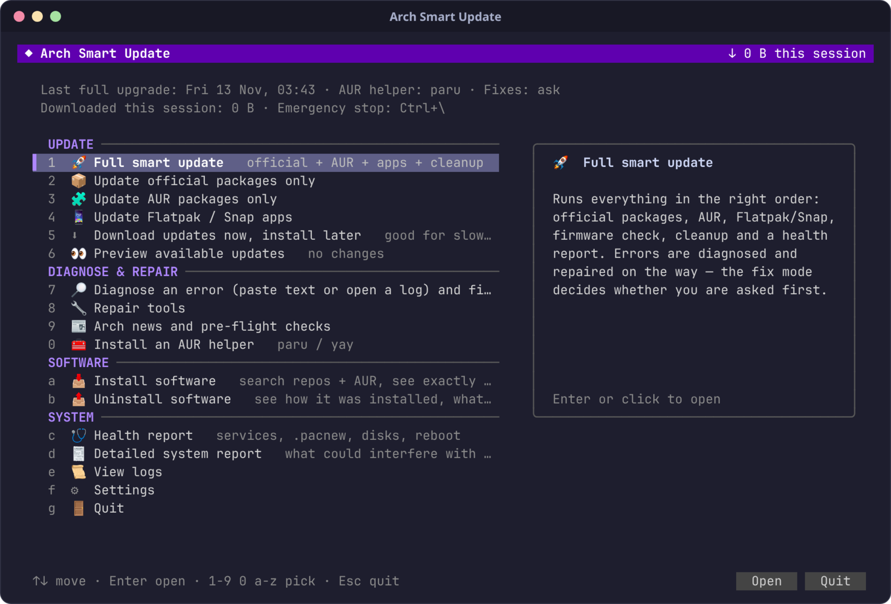
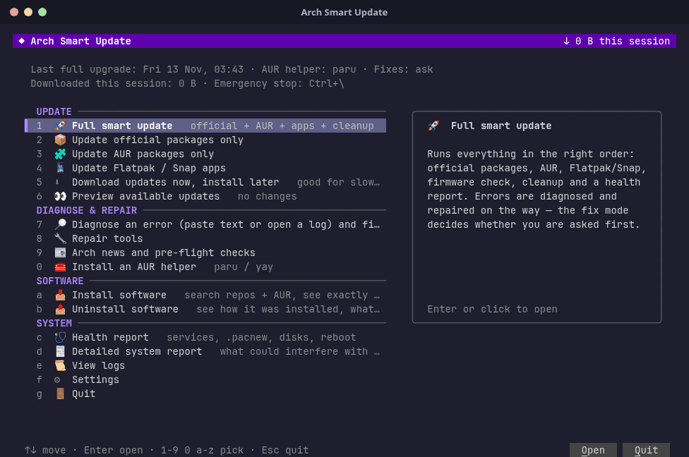
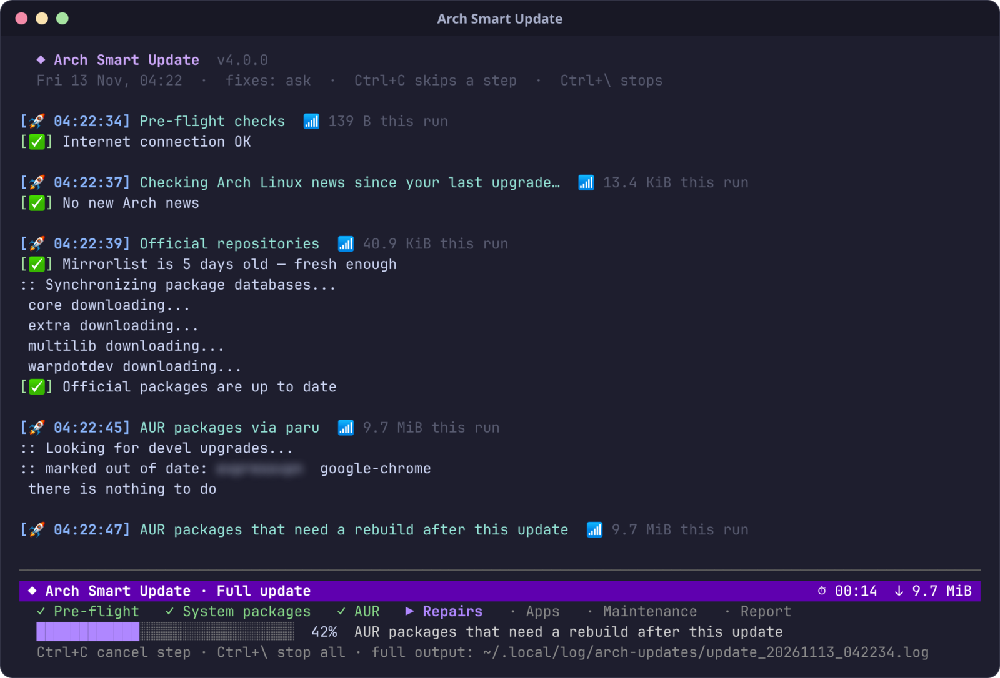
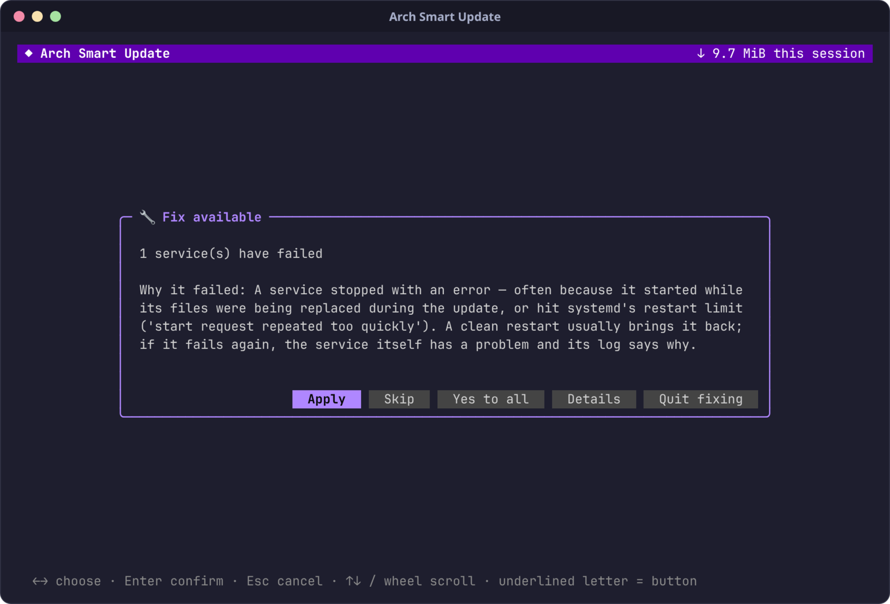

Update Arch without the worry.
One command updates everything. If something breaks, it tells you why in plain words — and fixes it.
$ git clone https://github.com/mneftekhar/arch-smart-update && ./arch-smart-update/smart-update.sh
A single Bash script · nothing else to install · MIT licensed

Why use it
Everything a careful update needs, done for you.
You keep control of every change. It does the remembering, the ordering and the troubleshooting.
One command, whole system
Official packages, AUR, Flatpak, Snap, firmware and cleanup — in the right order, with Arch news checked first.
Errors in plain language
When a step fails you see the likely cause and why it happened — not a wall of pacman output.
Fixes itself — with your OK
60+ known problems come with a ready fix: keyrings, mirrors, locks, conflicts, AUR builds, broken links and more.
Calm while it works
A fixed status bar shows phase, progress, time and data used. Long builds shrink to a single line.
Never half-updated
Stopping waits until pacman finishes installing. Files are moved to a backup, not deleted, with the restore command shown.
Made for unreliable internet
Resumable downloads, DNS-over-HTTPS fallback, in-country mirrors and proxy detection get updates through slow or filtered networks.
Scheduled updates, your way
Late at night while you're away, whenever the computer is idle, or at a fixed time — daily, weekly or on chosen days. Fully automatic, or a detailed view where you answer every question.
Find the right software
Search the repos and the AUR at once. Results are sorted into apps, plugins (grouped under the app they need), libraries, fonts and themes — with popularity, AUR votes and the last update date.
See it work
Quiet when things go right. Clear when they don't.
A real update, recorded as it ran. Personal details are blurred.



Get started
Ready in under a minute.
Works on Arch Linux and Arch-based distributions with bash, sudo and curl. No AUR helper yet? It can install one for you.
Get the script
git clone https://github.com/mneftekhar/arch-smart-updateOpen the menu
./arch-smart-update/smart-update.sh— pick an item with a click, the arrows or its hotkey.Or update right away
--runfor a full update,--dry-runto preview,--autoto apply safe fixes without asking.
Questions
Common questions about updating Arch Linux.
How do I update Arch Linux and the AUR with one command?
Run ./smart-update.sh --run. It refreshes mirrors when needed, updates the keyring first, upgrades official packages with pacman, then AUR packages with paru or yay, then Flatpak and Snap, and cleans the package cache.
How do I fix "signature is unknown trust" or archlinux-keyring errors?
Arch Smart Update recognises keyring and PGP signature errors, explains them, and offers the fix: it updates archlinux-keyring first and refreshes or re-initialises the pacman keys, then retries the update.
Can Arch Linux update automatically at night or when the computer is idle?
Yes. Under Scheduled updates you pick late at night while idle, any idle moment, or a fixed time, daily, weekly or on chosen days. It uses a systemd user timer and waits for AC power and a non-metered connection.
Is it safe? Will it leave my system half-updated?
Fixes are explained and asked first. The emergency stop waits until pacman has finished installing, files are moved to a backup instead of deleted, and AUR builds are skipped if the system update did not finish.
Does it work on Manjaro, EndeavourOS, CachyOS and Garuda?
It works on Arch Linux and Arch-based distributions that use pacman. It needs only bash, sudo and curl; everything else is optional and explained by --setup.